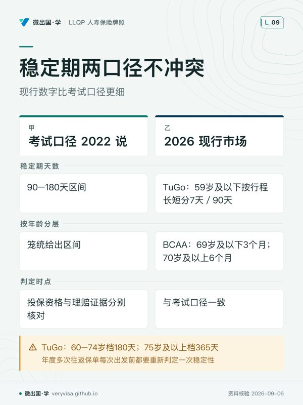

🃏 Flashcards · 3 闪卡 · 3 张 🖼 Slides · 2 幻灯 · 2 页 ✍️ Questions · 8 刷题 · 8 道
意外与疾病 Accident & Sickness P2 稳住 P2 Hold steady
ZH EN ZH + EN
先看这一章怎么考 First, how this chapter is tested
账单分摊计算题：同时给出年度免赔额（deductible）与共保比例（co-insurance factor），测试是否严格遵循“先扣免赔额、再按比例乘余额”的顺序，以及个人免赔额与家庭免赔额（family deductible）谁先触发的连锁清算规则。 Expense-sharing calculation questions: Presenting an annual deductible and a co-insurance factor simultaneously, testing whether you strictly follow the two-step sequence of subtracting the deductible first before applying the percentage to the remaining balance, as well as the sequential clearing rules governing whether the individual deductible or family deductible is satisfied first. 牙科与处方药报销边界题：通过牙医实际收费高于费用标准表（fee schedule）或客户坚持使用非处方集（formulary）品牌药的场景，测试差额自付的底层原因并非保险公司违约拒赔。 Dental and prescription drug reimbursement boundary questions: Presenting scenarios where a dentist charges above the fee schedule or a client insists on a brand-name drug outside the formulary, testing your understanding that paying the out-of-pocket difference arises from non-covered excess charges rather than an insurer breach or claim denial. 旅行险既往病史与稳定期判定题：给出长者或慢性病患者出发前调药、复查或出现症状的天数，测试稳定期（stability period）回溯判定，以及某项既往病史拒赔是否影响同一行程中不相关意外索赔。 Travel insurance pre-existing condition and stability period questions: Providing the timeline of medication adjustments, follow-up exams, or symptom emergence prior to departure for seniors or chronic condition patients, testing the retrospective determination of the stability period and confirming that denying a claim for a pre-existing condition does not void unrelated accidental injury claims on the same trip. 最常丢分的陷阱（看到题干信号就警觉） Traps that cost the most marks (watch for the signal in the stem)
免赔额与共保算反顺序 Reversing the calculation order of deductible and co-insurance 题干同时出现账单总额、年度免赔额（annual deductible）和共保比例（co-insurance factor）。 The question stem presents the total bill, an annual deductible, and a co-insurance factor simultaneously. 超费用标准误当拒赔 Mistaking charges exceeding the fee schedule for claim denial 题干提到牙医诊所实际收费高于省牙医协会建议或合同指定的费用标准表金额。 The question stem states that the dental clinic's actual charges exceed the provincial dental association fee guide or the fee schedule specified in the contract. 既往病史拒赔扩大化 Overextending pre-existing condition exclusions to unrelated claims 题干先描述稳定期内调药或就诊，随后出现与该既往病史毫无关联的突发意外或新伤病索赔。 The question stem describes a medication adjustment or medical visit during the stability period, followed by a sudden accident or new medical claim completely unrelated to the pre-existing condition. 本章考点页：导图、要点表、7 道带逐项解析的练习 →
核实日期：2026-09-05｜本页现行数字的出处：BC MSP 不覆盖清单（BC 省政府（论坛解读） ）、Pacific Blue Cross 个人产品线（Pacific Blue Cross ）、BCAA 旅行险稳定期（BCAA ）、TuGo 稳定期矩阵（TuGo ）、Manulife CoverMe（Manulife CoverMe ）、Sun Life 个人健康险（Sun Life ）、MSP 保费取消（BC 省政府 ）、Pharmacare Act 现状（联邦协议 Health Canada ；BC实施另见Plan NP）。
复核周期：2027-04-01。市场产品线名称与稳定期数字每年都可能调整，本页第四节标注的产品名以本次抓取日为准。
0. 这一篇解决什么问题
你要考的还是 意外与疾病保险模块 ，本篇对应 CISRO 能力组件 c2「分析可用产品」，占本模块 30%——这一次不讲收入没了怎么办，而讲账单来了谁来付。加拿大人以为自己"有医保"，公费保障含合资格医生与医院服务，并有药品、牙科等专项计划；具体资格、限额和境外保障有限，不能理解为所有账单均由政府支付——这中间的缺口才是扩展医疗险、牙科险与旅行险存在的全部理由。
这一篇帮你做到三件事：① 说清 BC MSP 到底覆盖什么、不覆盖什么，而不是含糊地说"政府医保"；② 拿到一张牙科账单或医疗账单，正确算出免赔额与共保比例联动后客户实付多少；③ 判断一起境外医疗理赔会不会因既往病史被拒，以及为什么"信用卡自带"和"专门买的"旅行险风险结构完全不同。
一、制度设计与底层逻辑：为什么"有医保"还要再买一份 本节回答 This section answers 解释公费缺口、道德风险分担、费用标准表与团险个险定位 Explaining public healthcare gaps, moral hazard cost sharing, fee schedules, and group versus individual positioning. 本章考题 2 Question 2
1. 先分清 MSP 与其他公费医疗项目
BC 的 MSP 主要支付医疗必要的医生服务及列明项目，医院服务和药品等公费安排还要分别核对。常规牙科、眼镜及许多辅助服务并不由 MSP 普遍支付，但可能有其他政府计划或特定人群补助。扩展医疗的需要来自这些公共及既有私人保障核算后仍未覆盖的费用，不能把 MSP 不赔直接写成政府完全不管。
2. 保险公司与投保人在博弈什么：免赔额与共保比例
一份扩展医疗保单如果全额报销一切费用，投保人就没有动机去选便宜的仿制药、没有理由不去看不必要的门诊——这仍然是道德风险的老问题，只是从伤残险的"复工动机"换成了"就医节制动机"。所以不少扩展医疗保单会采用以下成本分担方式，是否同时设置依计划：免赔额（deductible）——每年先自付一笔固定金额；共保比例（co-insurance factor）——免赔额用完后，剩余部分按约定比例分摊，保险公司付大头，投保人自付小头。牙科的常规维护共保常见在 75–80%（投保人自付 20–25%），而牙冠、桥体这类重建类项目共保常见降到 50%——保险公司对"越贵越难预测"的项目，把自付比例设得越高 ，这条底层逻辑与免赔额、共保比例的存在理由是同一件事。
3. 牙科费用标准表：不是保险公司拒赔，是费用标准本身设了顶
牙科理赔里最常被误解的一条是费用标准表（fee schedule） 。省牙医协会的建议费率表可作为计划依据，但合同可能指定不同年度、百分比或自身限额；应核该计划实际采用的表和版本。如果你的牙医实际收费高于表内金额，超出部分不是保险公司拒赔，是这项费用本身没有被任何一方承诺覆盖 ——保险公司严格按表付了它该付的那一份。这个区别在客户投诉时极其关键：客户以为"保险公司少赔了"，实际情况经常是"牙医收费高于费用标准，差额本来就该自付"。
4. 旅行险的结构性风险：核保在承保时松，判定在理赔时严
个人健康与旅行保险都要区分投保资格、健康问卷、既往病史限制和索赔证据。医疗报销险不能照搬 DI 的收入财务核保；免健康问卷的产品也不等于无条件保障。信用卡附带保险尤其须核持卡状态、年龄、行程期限和付款条件，而单独旅行险的问卷及稳定期同样依产品。投保时的资格检查与索赔时核病历可以同时存在。
⚠️
信用卡附带保险也要读保险证明
附带保险与单独旅行险都可能限制既往病史、行程长度及合资格费用。先取得实际证明，再查本次旅行是否满足条件；问卷少不表示既往病史只在理赔时才有法律意义，交了保费也不保证每类风险获保。
5. 团体套餐制 vs 个人定制制：同一类保障，两种设计哲学
雇主提供的团体扩展医疗计划和个人自购的扩展医疗险，解决的是同一个问题（补 MSP 的缺口），但产品设计的哲学完全相反。团体计划是套餐制 ：雇主与保险公司谈一份主合同，同一合资格类别按约定条款保障，也可能提供弹性选择或不同员工类别；可选额度依计划——好处是保费低、免核保或免体检额度高；坏处是"一刀切"，某些员工的实际需求可能远超或远低于套餐设计。个人计划是定制制 ：投保人可以自选免赔额、共保比例与年度上限的组合来匹配自己的预算与需求，但几乎总要经过核保，保费也通常更高。
这条区别衍生出本章一个重要的实务判断：团体计划的缺口，要靠个人计划去补，而不是要求团体计划面面俱到 。团体计划里最常见的缺口包括：没有意外伤残与身故（AD&D）保障、视力保健额度偏低（如每 24 个月 $100，早已跟不上一副眼镜的实际花费）、牙齿矫正终身上限偏低且共保比例只有 50%、只保半私人病房而非私人病房。代理人的工作不是批评雇主的团体计划"不够好"，而是先列出团体计划的具体缺口清单，再用个人险逐项补齐 ——这正是需求分析（needs analysis）在这条产品线上的具体操作模板。
节末检索小测 · 先别往回翻，凭记忆作答 Quick recall check: answer from memory before scrolling back
An insured individual has an extended health and dental policy that covers 80% of routine dental maintenance based on the provincial dental association fee schedule, with no deductible. Why do insurers structure dental plans with a fee schedule and lower co-insurance factors (such as 50%) for major restorative work like crowns and bridges?
一名受保人持有扩展医疗与牙科保单，按省牙医协会费用标准表报销 80% 的常规牙科维护且无免赔额。为什么保险公司要用费用标准表，并对牙冠、桥体等重建类项目设置更低的共保比例（如 50%）？
a To cap the insurer's liability at a recognized benchmark and curb moral hazard by increasing the insured's share on costlier, harder-to-predict procedures. ✓ 正确。费用标准表（fee schedule）的作用是设定合同认可的费用基准上限，超出部分并非拒赔而是原本不在承诺范围内；同时对越贵、越难预测的重建类项目（major restorative）调低共保比例（co-insurance factor）至 50%，是为了防范就医道德风险，促使受保人节制非必要的高额开支。 Correct. The purpose of a fee schedule is to establish a recognized benchmark ceiling for covered procedures; charges exceeding the fee schedule are not claim denials, but rather expenses outside the insurer's contractual scope. Lowering the co-insurance factor to 50% on costlier, less predictable major restorative work curbs moral hazard by requiring greater financial participation from the insured on elective or expensive treatments.
b To penalize dentists who charge above the provincial standard by legally voiding the entire dental claim whenever an overcharge occurs. ✗ 错误（陷阱：超费用标准误当拒赔）。牙医实际收费高于费用标准表（fee schedule）时，保险公司仍会严格按表内金额乘以共保比例赔付，超出差额由受保人自付，绝不会因此将整笔理赔作废。 Incorrect. Mistaking excess fee schedule charges for claim voidance. When a dentist charges above the fee schedule, the insurer still reimburses its co-insurance percentage based on the approved fee schedule amount; the excess is paid out of pocket by the insured and never voids the claim.
c To shift the remaining 50% of major restorative dental costs onto the provincial health care plan once the private limit is reached. ✗ 错误（陷阱：公费医保覆盖范围混淆）。省级医保（MSP）仅覆盖极少数医院内的口腔或牙科手术，常规牙科与牙冠、桥体等重建类项目的自付部分不会由省级医保接手支付。 Incorrect. Confusing the scope of provincial healthcare. Provincial healthcare plans cover only rare oral surgeries performed in hospitals; out-of-pocket costs for crowns and bridges are never shifted to provincial plans.
d To replace the need for medical underwriting on individual policies by applying uniform group package limits to all applicants. ✗ 错误（陷阱：团体套餐与个人定制混淆）。设置共保比例和费用标准表是赔付端的成本分担机制，个人定制计划（individual customization）在投保端几乎仍需经过核保，并不因存在共保比例就免除核保。 Incorrect. Confusing cost sharing with underwriting requirements. Applying co-insurance factors and fee schedules serves as a claim cost-sharing mechanism; individual customized plans still require medical underwriting regardless of their co-insurance terms.
看答案与每个选项的解析 Show the answer and why each option is right or wrong 答案 Answer ：a
二、2026 现行政策与数字：MSP 覆盖什么，扩展医疗覆盖什么 本节回答 This section answers 界定MSP不保清单、旅行稳定期、AD&D分级与PHSP税务 Defining services excluded from MSP, travel stability periods, AD&D benefit schedules, and PHSP tax treatment. 本章考题 4 Question 4
1. BC MSP 现行覆盖与不覆盖清单（回官方页核实）
图：MSP 覆盖与不覆盖——扩展医疗接住公共保障缺口
考试口径全书用"provincial health care plans"泛称，从未展开任一省的具体清单；这里回 BC 政府现行页面把清单填实（BC 省政府（论坛解读） ）：
把这张表和第一节的机制对照着看：右边这一整列，就是扩展医疗险、牙科险与旅行险三类产品分别要接住的账单。
2. 扩展医疗五类典型保障
个人扩展医疗险通常围绕五类做定制：① 处方药——是否按处方集（formulary）限定仿制药，坚持要品牌药需自付差价；② 辅助医疗——按摩、脊医、物理治疗等 MSP 不覆盖的项目；③ 视力——年度或两年一次的验光/配镜津贴；④ 医疗器械——轮椅、血糖仪等；⑤ 住院升级——半私人或私人病房差额。考试口径给出的常见视力保健上限区间是每 24 个月 $100–$350，但这类具体额度逐年被通胀侵蚀，各计划差异很大，记机制比记数字更有用。
3. 牙科三级与考场与现行对照表
牙科保障通常分三级：常规维护（洁牙、补牙、X 光）、基础修复（根管、拔牙）、重建类（牙冠、桥体、种植体）。考试口径给出的是笼统的共保比例区间，而 2026 现行市场上，主流保险公司已经把产品做成分档套餐而不是单一比例——这是考试口径机制与现行产品形态之间的一处错位：
4. 旅行险稳定期：考试口径给区间，现行市场按年龄分层
考试口径给出的既往病史回溯期区间是出发前 90–180 天 ，慢性病需连续无症状满 1 年才可能获全额覆盖——这是一个长青机制，但 2026 现行市场把这条机制做得更精细。以 BCAA 与 TuGo 两家为例（三列表）：
这张表最容易被读反的一点 ：现行数字比考试口径更细，不代表考试口径"错了"——考试口径给的是长青的机制性区间，现行产品是这条机制在市场上的具体落地形态，二者不冲突，只是精细度不同。
5. 2024 Pharmacare Act：考试口径的空白，也是 BC 的领先
联邦《药物保险法》（Pharmacare Act）于 2024-10-10 通过，首期覆盖避孕药具与糖尿病用药。考试口径定稿于 2022 年，早于此法，全书未提及"Pharmacare"一词。更正 ：BC 于 2024-09-12 最早公开宣布与联邦的合作意向，但据加拿大卫生部官方新闻稿，《药物保险法》框架下曼尼托巴省于 2025-02-27 才是第一个正式签约的省份 ，BC 于 2025-03-06 签约，是第二个（投资 $670M/4 年，覆盖避孕药具与糖尿病用药/器械/耗材，Health Canada ）。「BC 最早公开表态」这个判断成立，但「BC 是第一个签约省份」不准确。
ℹ️
药品保障按省份、清单和实施日核对
BC Plan NP 自 2026-03-01 起全额覆盖列明的糖尿病药物、更年期激素治疗和避孕药具。其他处方还可能由 Fair PharmaCare 等项目覆盖部分费用；先核资格及清单，再估扩展医疗缺口，不能把协议首期两类药物写成 BC 全部现行公共药品保障。
6. 意外伤残给付比例表：按严重度分级，不是全有全无
团体计划常见的意外身故与伤残（Accidental Death and Dismemberment，AD&D）附加险，赔付方式不是"出事就赔全额"，而是按一张给付比例表（schedule of loss）分级：双肢缺失、双目失明或身故按 100% 保额给付；考试口径举例中，单肢或单眼 75%／67%、单耳 33%、失语 50% 用于说明分级计算；具体比例必须来自题干或合同，不能作为在售 AD&D 的通用表。这张表背后的逻辑与人寿保险完全不同——人寿保险的触发条件只有一个（死亡），而 AD&D 要把"多严重算多少"逐级写清楚，这也是为什么 AD&D 常被误认为"保额虚高、实际赔得少"：保额确实是保单上写的那个数字，但具体这次事故赔多少，要先查这张分级表。考试口径还以意外后 365 天内 发生指定损失说明时限条件；实务以实际保单的天数、起算点和损失定义为准，RBC Professional Series 的AD&D附加安排就采用事故后六个月内发生指定损失，并以一只手/脚半额、单眼三分之一等条款计算；这说明365天及考试口径比例不能作为全行业统一值。
7. 魁北克是唯一的税务例外，BC 遵循联邦通则
联邦税务上，雇主向符合条件的 private health services plan（PHSP）缴付医疗或牙科保费，一般不构成员工应税福利；直接支付非 PHSP 医疗费用则可能应税。魁北克省税对雇主提供的 PHSP 保障另有应税福利处理，不能据此说其联邦税也反过来征税。BC 个案同样先判断计划是否符合 PHSP 条件，而非只看是否叫团体医疗。
节末检索小测 · 先别往回翻，凭记忆作答 Quick recall check: answer from memory before scrolling back
A British Columbia employer pays 100% of the premiums for a qualifying private health services plan (PHSP) that provides extended health and dental coverage to its employees. For income tax purposes, how are these employer-paid premiums treated for an employee working and residing in British Columbia?
一家 BC 省雇主为员工全额缴纳合资格私人健康服务计划（PHSP）的扩展医疗与牙科保费。在所得税处理上，雇主缴纳的这部分保费对在 BC 省工作并居住的员工应当如何定性？
a They are a taxable benefit for both federal and provincial income tax purposes because all employer-paid group benefits are taxed as employment income. ✗ 错误（陷阱：应税福利通则混淆）。在联邦税及 BC 省税下，雇主向符合条件的私人健康服务计划（private health services plan, PHSP）缴付的医疗或牙科保费一般不构成员工的应税福利（taxable benefit）。 Incorrect. Confusing taxable benefit rules. Under federal tax law and British Columbia provincial tax rules, employer-paid premiums toward a qualifying private health services plan (PHSP) generally do not constitute a taxable employment benefit to the employee.
b They are a non-taxable benefit federally, but are treated as a taxable benefit provincially because British Columbia follows the Quebec tax exception. ✗ 错误（陷阱：跨省税混淆）。魁北克省是唯一在省税层面对雇主提供的 PHSP 保障作应税福利例外处理的省份，BC 省遵循联邦通则，省税同样不将其视作应税福利。 Incorrect. Misapplying provincial tax exceptions. Quebec is the only province that treats employer-paid PHSP premiums as a taxable benefit for provincial income tax purposes; British Columbia follows the general federal rule and does not tax them.
c They generally do not constitute a taxable benefit for the employee, unlike in Quebec where provincial tax treats employer PHSP contributions as taxable. ✓ 正确。联邦税务上，雇主向符合条件的私人健康服务计划（PHSP）缴付医疗或牙科保费一般不构成员工应税福利（taxable benefit）；魁北克省税是唯一的例外，BC 省遵循联邦通则。 Correct. For federal income tax purposes, employer-paid premiums for a qualifying private health services plan (PHSP) covering extended health and dental care generally do not constitute a taxable benefit to employees. Quebec provincial tax is the sole exception, and British Columbia adheres to the general federal non-taxable treatment.
d They are tax-free only up to the vision care limit of $350 every 24 months, with any remaining premium portion taxed as income. ✗ 错误（陷阱：概念张冠李戴）。每 24 个月 $100–$350 是考试口径中常见的视力保健报销上限区间，与雇主缴付 PHSP 保费是否构成应税福利毫无关系。 Incorrect. Misapplying benefit caps to tax law. Benefit maximums such as $100 to $350 every 24 months for vision care represent typical extended health plan sub-limits and have no bearing on the tax-exempt status of employer-paid PHSP premiums.
看答案与每个选项的解析 Show the answer and why each option is right or wrong 答案 Answer ：c
三、实务流程：代理人在这条产品线上做什么 本节回答 This section answers 梳理需求分析、核保分流、直接结算与既往病史争议处理 Outlining needs analysis procedures, underwriting triage, direct billing mechanics, and pre-existing condition claim disputes.
节末检索小测 · 先别往回翻，凭记忆作答 Quick recall check: answer from memory before scrolling back
During the product selection and claims stages for personal health and dental insurance, which action correctly reflects the procedural framework an advisor should follow?
在个人健康与牙科保险的产品选择及理赔阶段，下列哪项做法准确反映了代理人应遵循的实务流程？
a Route all applicants with complex pre-existing conditions into standard underwritten plans first, since guaranteed acceptance plans have identical premiums. ✗ 错误（陷阱：核保分流机制倒置）。在产品选择阶段应按核保状况分流：能通过核保的走定制型个人计划，核保被拒或既往病史（pre-existing condition）复杂的才比较免核保计划（guaranteed acceptance plan），且免核保计划通常保费更高、限制更多。 Incorrect. Inverting the underwriting triage workflow. During product selection, advisors should triage based on insurability: applicants who qualify should pursue underwritten customized plans, while guaranteed acceptance plans—which carry higher premiums and tighter restrictions—are recommended primarily when underwriting is declined or pre-existing conditions are complex.
b Distinguish between direct billing at the pharmacy or dental office and reimbursement claims where the client pays upfront and retains original receipts. ✓ 正确。在报销与理赔阶段，必须区分直接结算（direct billing，即在药房或牙医处当场扣除保险公司应付部分）与报销制（reimbursement，即先垫付后凭单据报销），并提醒客户保留处方笺、收据等原始单据。 Correct. During the claims and settlement process, advisors must distinguish between direct billing (where the insurer's covered portion is deducted at the pharmacy counter or dental office) and traditional reimbursement (where the client pays upfront and submits claims with receipts), reminding clients to retain all original invoices and prescriptions.
c Advise clients that if a travel claim is disputed due to a pre-existing condition, the entire policy is automatically voided for all unrelated medical events. ✗ 错误（陷阱：既往病史拒赔扩大化）。遇到既往病史（pre-existing condition）争议理赔时，应核对拒赔理由是否仅针对与该病症直接相关的费用，而不是默认全单作废。 Incorrect. Overextending pre-existing condition claim denials. When a claim dispute arises regarding a pre-existing condition, the advisor must verify whether the denial applies strictly to expenses directly related to that condition rather than assuming the entire policy is voided.
d Skip reviewing the employer group benefits booklet during needs analysis because provincial health care plans already list all uncovered services. ✗ 错误（陷阱：漏做团体福利核对）。需求分析（needs analysis）阶段的第一步就是先问客户有无雇主团体福利、核对团体福利手册，再逐项对照省级医保不覆盖清单找缺口。 Incorrect. Omitting group benefits verification. The initial step in needs analysis is to review the client's existing employer group benefits booklet and cross-reference it against public healthcare exclusions to pinpoint genuine coverage gaps.
看答案与每个选项的解析 Show the answer and why each option is right or wrong 答案 Answer ：b
四、2026 市场：谁在卖，产品叫什么，柜台怎么说 本节回答 This section answers 对比免核保计划的等待期与分项限额、离职转换期及分档结构 Comparing waiting periods, sub-limits, group conversion privileges, and benefit tier structures in guaranteed issue plans.
以下产品线名称均于 2026-09-05 从各公司官方页回源核实。促销数字、保费与佣金一律不写。
Pacific Blue Cross （BC 本地最大的非营利医疗保险机构之一）——个人产品线包括 Health and Dental（Bronze/Silver/Gold 三档定制套餐）、Guaranteed Acceptance （Essential/Bronze/Silver/Gold 四档，免医疗问卷）、Group Conversion（离职 60 天内从团体计划转投，不设除外）、Retirement（面向退休人士的三档套餐）、Dental Only（单纯牙科），以及 Emergency Medical Insurance／Trip Protection Insurance（境外紧急医疗与行程取消/中断两类旅行险）。它解决考试口径里的哪个概念：官方原话直接把整套产品定位成"补足省级医保不覆盖的部分"——与本章第一节的核心机制逐字对应，其中 Guaranteed Acceptance 系列正是"核保被拒或不愿核保的客户"的退路。
BCAA （BC 汽车协会旗下的保险业务）——个人旅行险主打 Pre-existing Condition Coverage 附加险，按年龄分两档稳定期（69 岁及以下 3 个月、70 岁及以上 6 个月），最高额外提供 $300,000 的既往病史医疗保障，前提是出发前至少 7 天无新症状或未就诊。它解决考试口径里的哪个概念：这正是第二节三列表里"考试口径给区间、现行按年龄分层"的具体产品实现，也是本章案例三"雪鸟族既往病史拒赔"的现实对照物。
TuGo （加拿大专营旅行险的公司之一）——现行稳定期规则是一套"年龄 × 行程长短"矩阵：59 岁及以下按单次行程是否超过 35 天分 7 天／90 天两档，该页所列60–74岁档 180 天，该页所列75岁及以上档 365 天，另有 Reduced Stability Rider 供不满足标准稳定期的旅客加购。它解决考试口径里的哪个概念：把考试口径笼统的"90–180 天"区间拆解成一张精细矩阵，证明考试口径给出的是行业惯例的粗略边界，具体执行因产品而异。
Manulife CoverMe ——个人产品线包括 Flexcare（可定制健康+牙科套餐）与 Guaranteed Issue Enhanced Plan（免核保问卷，含既往病史保护，「no medical questions or exams at time of application – even if you have a pre-existing health condition」），另有 CoverMe Travel Insurance（境外紧急医疗、行程取消/中断、航班意外）。它解决考试口径里的哪个概念：Guaranteed Issue 系列是考试口径"个人险按需定制、但既往病史通常需核保"这条机制的例外产品，但官网原文核实后发现，免核保换来的不是统一等待期，而是按项目分别设等待期与限额：处方药报销 80%×$3,125（每年最多付 $2,500）；医疗器械分两档——拐杖等 3 个月等待期、每年上限 $200、终身上限 $1,500，非电动轮椅/病床 1 年等待期、每 2 年上限 $1,000、终身上限 $2,500；境外紧急医疗上限 $5,000,000 但每次出行只保 10 天、要求出发前 9 个月病情稳定、每次理赔 $200 免赔额、70 岁停保（Manulife CoverMe ）。
Sun Life ——官网渲染正文已核实：个人健康险分 Basic／Standard／Enhanced 三档，三档都含牙科 ，牙科与处方药报销比例分别为 60%／70%／80%；Supplemental healthcare 与 Paramedical 在 Basic 档为 60%，Standard 与 Enhanced 为 100%。处方药年度报销上限：Basic 60% 至 $750/年；Standard 前 $7,000 报 70%、其后 $93,000 报 100%；Enhanced 前 $5,000 报 80%、其后 $245,000 报 100%（Sun Life ）。境外紧急医疗的报销比例未取得对应条款，不以二手比例报价，应直接核保险证明。它解决考试口径里的哪个概念：三档分级与"越高档保障越全"的排列，直接对应第一节"共保比例是保险公司控制道德风险的工具"这条底层逻辑。
Allianz Global Assistance 与 GMS（Group Medical Services）——两家均确认在 BC 个人市场持牌销售旅行险/健康险产品（GMS 的整合产品线名为 My Health，含健康/处方药/牙科/旅行紧急医疗；Allianz 提供 BC/AB/ON 三省个人旅行险），但两家官网条款页均未逐条核对具体稳定期天数与保额上限——产品与市场存在性已确认，具体条款数字仍未核，是两件不同的事（Group Medical Services（经 Web… ）。
节末检索小测 · 先别往回翻，凭记忆作答 Quick recall check: answer from memory before scrolling back
A client who was recently declined for medically underwritten personal health insurance is considering a guaranteed issue personal health plan that requires no medical questions at the time of application. What structural trade-off is typically embedded in such guaranteed issue plans?
一名近期在需要医疗核保的个人健康险投保中被拒保的客户，正考虑投保一份申请时无需回答医疗问卷的免核保个人健康计划。这类免核保计划在产品结构上通常包含怎样的代价或限制？
a They usually cost more and set separate waiting periods and tighter caps for items such as medical equipment rather than giving open-ended cover. ✓ 正确。免核保承保计划（guaranteed issue plan）在投保时不问医疗问卷，代价通常是保费更高、限制更多：不是统一等待期，而是按项目分别设等待期与限额（讲解页核实的一款产品就对医疗器械分设 3 个月与 1 年等待期及年度、终身上限，境外紧急医疗还限每次出行天数）。 Correct. Guaranteed issue plans do not require a medical questionnaire at application, but the trade-off is higher premiums and more restrictive policy terms: rather than a single waiting period, they typically establish separate waiting periods and caps for specific categories (for example, separate 3-month and 1-year waiting periods with annual and lifetime caps on medical equipment, and duration limits on out-of-country emergency medical coverage).
b They provide unlimited prescription drug and dental coverage immediately upon issue, funded by provincial government subsidies. ✗ 错误（陷阱：免核保等于无限制保障）。免核保承保计划（guaranteed acceptance/issue plan）绝非无限制或由政府补贴，其处方药和器械往往有明确的报销比例与年度封顶限额。 Incorrect. Assuming guaranteed issue equates to unrestricted coverage. Guaranteed issue plans are not government-subsidized and do not provide unlimited benefits; they enforce clear co-insurance percentages, waiting periods, and annual caps on drugs and medical equipment.
c They are only available to employees who apply within 60 days of leaving an employer group plan under a group conversion privilege. ✗ 错误（陷阱：免核保个人险与团体转换险混淆）。离职 60 天内从团体计划转投且不设除外属于团体转换（group conversion）产品线，而市场上的免核保计划（guaranteed acceptance/issue plan）面向一般个人开放，不以离职转换为前提。 Incorrect. Confusing individual guaranteed issue plans with group conversion plans. Applying within 60 days of leaving an employer group plan without exclusions is a feature of group conversion privileges, whereas standalone guaranteed issue plans are available to individual applicants without requiring prior group plan departure.
d They waive all stability period requirements for out-of-country emergency medical claims regardless of the insured's age or trip length. ✗ 错误（陷阱：忽略旅行险稳定期限制）。即便个人健康计划在投保时免除医疗问卷，其附带的境外紧急医疗保障依然对既往病史（pre-existing condition）设有严格的出发前稳定期要求（例如要求出发前 9 个月病情稳定）及每次出行天数上限。 Incorrect. Ignoring travel stability period requirements. Even though a health plan waives medical questions upon application, any attached out-of-country emergency medical coverage continues to enforce strict pre-departure stability periods for pre-existing conditions (for example, requiring the condition to be stable for 9 months before departure) as well as trip duration limits.
看答案与每个选项的解析 Show the answer and why each option is right or wrong 答案 Answer ：a
五、历史变革：这条产品线为什么长这个样子 本节回答 This section answers 厘清MSP保费取消与保障无关、药物保险法进展及全国泛称 Clarifying that eliminating MSP premiums did not expand benefits, reviewing pharmacare developments, and explaining pan-Canadian terminology.
其一，BC 自 2020-01-01 取消 MSP 个人保费；EHT 则已于 2019-01-01 开始征收。EHT 的税基、免税额及分段算法与 MSP 个人资格不同，不能把 1.95% 说成所有工资区间适用的最高边际税率。取消个人保费本身不等于扩大 MSP 服务目录；此后的药品等保障调整须按各项目独立核实。
其二，2024 年 Pharmacare Act 通过，BC 最早公开表态、正式签约是第二个（曼尼托巴 2025-02-27 先签，BC 2025-03-06，Health Canada ）。 这是本模块少见的"BC 走在全国前面"的条目（其余多数条目是"BC 落后于考试口径泛称的全国规则"）。它的意义不在于取代扩展医疗险的处方药保障——首期覆盖面还很窄——而在于提醒代理人：这条产品线上，法规变化的方向不总是"补漏"，有时候是"分省抢跑" ，柜台谈保障范围时要留意各省进度不一致。
其三，考试口径完全没有点名 BC 的医保机构。 考试口径通篇用"provincial health care plans"这个全国泛称，从未出现"Medical Services Plan"或"MSP"这几个字。这不是考试口径写错了，是它按全国通则写；但一个在 BC 执业的代理人，客户问的永远是"我的 MSP 保不保这个"，考试口径本身给不了这个答案，这正是本页存在的理由。
节末检索小测 · 先别往回翻，凭记忆作答 Quick recall check: answer from memory before scrolling back
A resident of British Columbia notes that personal Medical Services Plan (MSP) premiums were eliminated in 2020 and that national pharmacare legislation was passed in 2024. How do these policy developments affect the resident's need for private extended health insurance?
一名 BC 省居民注意到个人医疗服务计划（MSP）保费已于 2020 年取消，且联邦于 2024 年通过了《药物保险法》。这些政策演变如何影响该居民对私人扩展医疗险的需求？
a Eliminating personal MSP premiums expanded the provincial schedule to cover routine dental and vision care, removing the need for private plans. ✗ 错误（陷阱：保费取消与覆盖范围因果混淆）。2020 年 BC 省取消的是个人 MSP 保费缴纳方式（并已于 2019 年起在雇主端征收雇主健康税 Employer Health Tax），取消个人保费本身完全不等于扩大 MSP 服务目录。 Incorrect. Confusing premium elimination with benefit expansion. The elimination of personal MSP premiums in British Columbia in 2020 (with the Employer Health Tax levied on employers since 2019) altered the funding mechanism but did not expand the statutory catalog of MSP-covered services to include routine dental or vision care.
b The initial phase of the pharmacare framework covers all prescription drugs on provincial formularies, making private drug coverage redundant. ✗ 错误（陷阱：夸大专项公共药品计划范围）。《药物保险法》（Pharmacare Act）首期及 BC 省自 2026-03-01 起实施的相关计划仅覆盖列明的糖尿病用药、避孕药具及更年期激素治疗等特定项目，并未取代扩展医疗险对其他广大处方药的保障。 Incorrect. Overstating the scope of initial public pharmacare coverage. The initial phase of the federal Pharmacare Act and related British Columbia programs (in effect from March 1, 2026) target only specific listed categories such as diabetes medications, contraceptives, and hormone replacement therapy; it does not replace private extended health coverage for the broader range of prescription drugs.
c Eliminating MSP premiums did not expand covered medical services, and initial public pharmacare covers only specific categories, so private coverage gaps remain. ✓ 正确。取消 MSP 个人保费仅改变筹资方式而不扩大 MSP 覆盖目录，且联邦《药物保险法》（Pharmacare Act）及相关省级计划首期覆盖面仅限糖尿病药具、避孕药具等特定类别，核算公共保障后依然存在需要扩展医疗险（extended health insurance）填补的缺口。 Correct. Eliminating personal MSP premiums changed how public healthcare is funded without broadening the scope of covered services, and the initial phase of the federal Pharmacare Act and provincial programs is restricted to specific categories like diabetes supplies and contraceptives; significant gaps remain that require private extended health insurance.
d Because British Columbia was the very first province to formally sign the bilateral pharmacare agreement in February 2025, all paramedical services are now public. ✗ 错误（陷阱：签约顺序与保障内容双错）。曼尼托巴省于 2025-02-27 才是第一个正式签约的省份，BC 省于 2024-09-12 最早公开表态、2025-03-06 第二个正式签约；且该协议与针灸、按摩等辅助医疗（paramedical services）无关。 Incorrect. Misrepresenting both the bilateral signing timeline and coverage scope. Manitoba was the first province to formally sign the bilateral pharmacare agreement on February 27, 2025 (British Columbia signed second on March 6, 2025, after announcing intent in September 2024); furthermore, the pharmacare agreement does not cover paramedical services such as physiotherapy or massage therapy.
看答案与每个选项的解析 Show the answer and why each option is right or wrong 答案 Answer ：c
六、案例：三个最容易在柜台上说错的场景 本节回答 This section answers 演练单人与家庭免赔额算账、稳定期拒赔边界及团体缺口补齐 Practicing calculations for individual and family deductibles, defining stability period denial boundaries, and supplementing group gaps. 本章考题 1 Question 1 本章考题 3 Question 3
案例 A：免赔额与共保比例联动计算（示例）
素里的会计师 Priya 因牙科治疗产生 $800 账单。她的个人牙科险：年度尚未用掉的免赔额 $100，常规维护共保 80%；假定 $800 全属合资格费用且年度限额足够 。
适用规则 ：先扣免赔额，剩余部分再按共保比例分——两步走，顺序不能反 。
计算 ：$800 − $100（免赔额）＝ $700；$700 × 80%（保险公司分担）＝ $560 （保险公司报销）；Priya 自付 $100 ＋ $700 × 20% ＝ $100 ＋ $140 ＝ $240 。
常见错法 ：直接对 $800 打 80% 算成报销 $640——漏了先扣免赔额这一步；这类账单题只要看到"免赔额 + 共保比例"同时出现，就要记住先减后乘，顺序反了金额一定错。
案例 B：家庭免赔额的连锁触发（示例）
本拿比一家三口：户主 Wei，配偶 Lin，儿子 Colton。团体计划设个人年度免赔额 $50，家庭年度免赔额 $150 （即三人合计付满 $150 后，全家当年免赔额清零）。
适用规则 ：家庭内任一成员先用完自己的 $50 个人免赔额，该成员当年免赔额清零；一旦全家合计付满 $150 的家庭免赔额，即使某个成员的个人额度还没单独用完，全家当年的免赔额也一并清零 。
结果演算 ：假定三笔全为合资格费用。Wei 的 $50 全部计入个人及家庭免赔额；Lin 的 $60 只有 $50 计入免赔额，余 $10 进入共保，家庭累计为 $100。Colton 的 $60 同样先计 $50 免赔额，余 $10 进入共保；家庭累计恰好达到 $150。Lin 与 Colton 的两笔 $10 不是免赔额，不能把家庭累计算成 $170。本例三名成员各 $50 恰与家庭上限相等；若家庭上限更低，才会出现有人尚未用完个人免赔额而全家已达到家庭上限的情形。
常见错法 ：只用"个人免赔额用完才算"去判断，忽略了家庭免赔额是一个独立的、可以提前触发的第二道开关，两道开关谁先触发就按谁执行。
案例 C：雪鸟族既往病史稳定期拒赔（示例）
列治文退休教师 Grant，72 岁，购买了年度多次往返旅行险（保司条款接近 TuGo 现行的年龄分层：72 岁按 "75 岁以下" 计，稳定期 180 天）。他计划前往亚利桑那州过冬 90 天。出发前 130 天 ，他的心脏病用药剂量被医生调整过一次。
适用规则 ：本例假定剂量调整属于合同定义的治疗变更，且不在允许的例外内。这样才可将 130 天与约定 180 天比较；实际合同可能对特定日常调药等设例外，须向保险人取得书面说明。健康问卷和索赔证据两阶段都可能涉及既往病史。
结果 ：130 天 < 180 天的稳定期要求，Grant 在美国因心脏问题住院，与心脏病直接相关的医疗账单被拒赔 ；但如果他在同一趟旅行中摔断了腿，这与心脏病无关，在无其他除外或重大误述、并满足其他条件时可申请给付。
常见错法 ：把与既往病史有关的费用除外、重大误述导致的合同效力问题、以及其他不相关索赔混为一谈。拒赔范围要看实际理由；不能保证任何不相关新伤病必赔，也不能断言所有剂量调整都破坏稳定性。
案例 D：BC 居民核对团体福利缺口，用个人险补齐（示例）
维多利亚的护士 Aarne 有雇主提供的团体扩展医疗计划。代理人帮他逐项核对后发现五处缺口：① 团体计划完全没有意外身故与伤残（AD&D）保障；② 视力保健额度每 24 个月只有 $100，早已不够配一副像样的眼镜；③ 牙齿矫正终身上限只有 $2,500 且共保比例只有 50%（重建类的低共保比例在这里体现得很明显）；④ 住院只保半私人病房，私人病房差额需自付；⑤ 团体计划完全不含境外旅行医疗。
适用规则 ：团体计划是套餐制，不会因为某个员工的需求更高就单独加量；补缺口的正确工具是个人险 ，而且只补缺口，不重复购买团体计划已经覆盖的部分。
结果 ：代理人为 Aarne 配置了一份含 AD&D、更高视力与正畸额度的个人扩展医疗附加险，外加一份独立的旅行险——没有换掉团体计划，而是在它之外精确补上五个缺口 。
常见错法 ：① 建议 Aarne 退出团体计划、整体换成个人计划——团体计划的免核保额度与低保费通常是团体计划的优势，不该轻易放弃；② 笼统建议"再买一份差不多的保险"而不逐项列出缺口——这样容易补重复的、漏该补的。
节末检索小测 · 先别往回翻，凭记忆作答 Quick recall check: answer from memory before scrolling back
A family of three is covered under a group extended health plan with an individual annual deductible of $50, a family annual deductible of $150, and an 80% co-insurance factor. During the year, the first member incurs $50 in eligible expenses and the second member incurs $60 in eligible expenses. At this point, how much has been credited toward the $150 family deductible?
一家三口受保于一份团体扩展医疗计划，个人年度免赔额为 $50，家庭年度免赔额为 $150，共保比例为 80%。当年第一位成员发生 $50 合资格费用，第二位成员发生 $60 合资格费用。此时累计计入 $150 家庭免赔额的金额是多少？
a $50, because only a claim that equals the exact $50 individual deductible cap is credited toward the family deductible. ✗ 错误（陷阱：漏计第二位成员的免赔额）。第二位成员的 $60 合资格费用中，前 $50 同样计入个人免赔额（individual deductible）及家庭免赔额（family deductible），不能只算第一位成员的 $50。 Incorrect. Omitting the second member's deductible contribution. From the second member's $60 in eligible expenses, the first $50 is credited toward their individual deductible and the family deductible; the calculation cannot be restricted to only the first member's $50.
b $100, because the second member's $60 claim contributes only the $50 individual deductible cap, while the remaining $10 enters co-insurance. ✓ 正确。第一位成员的 $50 全部计入个人及家庭免赔额；第二位成员的 $60 中只有 $50 计入免赔额，剩余 $10 进入共保比例（co-insurance factor）分摊，因此家庭免赔额（family deductible）此时累计为 $50 + $50 = $100。 Correct. The first member's $50 is fully credited toward their individual deductible and the family deductible. For the second member's $60 claim, only the first $50 applies to the individual deductible cap, while the remaining $10 enters co-insurance. Therefore, the total credited toward the family deductible at this point is $50 + $50 = $100.
c $150, because once two family members submit claims exceeding $50 each, the entire family deductible is automatically satisfied. ✗ 错误（陷阱：家庭免赔额触发条件混淆）。本例中个人免赔额 $50、家庭免赔额 $150，前两人各计入 $50 仅累计 $100，尚未达到 $150 的家庭上限。 Incorrect. Confusing the family deductible threshold. With an individual deductible of $50 and a family deductible of $150, two members contributing $50 each accumulate $100, which does not yet satisfy the $150 family ceiling.
d $170, because adding a third member's $60 bill to the prior bills credits every dollar submitted toward the family deductible. ✗ 错误（陷阱：把进入共保的余额误算入家庭免赔额）。每位成员超出 $50 个人免赔额（individual deductible）的 $10 属于进入共保的金额，不是免赔额，绝不能把家庭免赔额累计算成 $170。 Incorrect. Erroneously adding co-insurance amounts to the family deductible. Amounts exceeding the $50 individual deductible enter co-insurance cost sharing and do not count toward the deductible; the family deductible cannot be calculated as $170.
看答案与每个选项的解析 Show the answer and why each option is right or wrong 答案 Answer ：b
七、考试陷阱与考场与现行对照清单 本节回答 This section answers 汇总十大高频考场陷阱识别信号及考场与实务双口径对照 Summarizing high-frequency exam trap indicators and comparing exam standards against current market practice.
以下每条对应本章常见考点的考点与陷阱形态，按版权边界只写形态，不复述任何官方题干。
免赔额与共保比例算反顺序 （陷阱形态：漏算一步）。见案例 A。识别方法：题干同时给出免赔额与共保比例时，一律先减后乘，绝不能直接对总额打比例。
家庭免赔额被当成"个人免赔额乘以人数" （陷阱形态：概念混淆）。家庭免赔额是一个独立触发的总池子，不是简单加总；一旦触发，全家 当年免赔额一并清零，不是只清零触发那个人的。
牙科超额收费被误认为"保险公司拒赔" （陷阱形态：责任方混淆）。费用标准表设的是报销上限，不是保险公司的过错；识别方法：题干若出现"牙医收费高于费用标准"，答案方向永远是"差额自付"，不是"投诉保险公司"。
既往病史拒赔被理解成全单作废 （陷阱形态：范围扩大）。见案例 C。识别方法：题干若问"是否所有理赔都被拒"，不相关新伤病仍须核其他承保条件；重大误述可能影响合同效力。
信用卡自带旅行险被当成与专门购买的旅行险保障范围相同 （陷阱形态：产品同质化误判）。识别方法：题干提到"信用卡自带"时，要联想到核保时点被推迟到理赔时，风险敞口通常更不确定，而不是默认"反正都是保险，保障应该差不多"。
MSP 保费取消被误解为覆盖范围扩大 （陷阱形态：因果混淆）。2020 年 BC 取消的是保费缴纳方式，不是覆盖范围；识别方法：题干若把"免保费"和"报销范围变大"挂钩，这是错误的因果关系。
旅行险稳定期天数被当成全国统一标准 （陷阱形态：以偏概全）。考试口径给的 90–180 天是行业惯例区间，具体天数因公司、年龄、行程长短而异；识别方法：题干没有指名具体公司时，只能用考试口径给的区间答区间，不能代入任何一家现行产品的具体天数。
AD&D 意外伤残给付按全额保额计算 （陷阱形态：忽略分级）。见第二节第 6 条。识别方法：题干给出具体损失类型（单肢、单眼、单耳等）时，必须先查给付比例表分级，不能默认全额赔付；同时核对合同的损失发生时限；365天只用于题干明确采用的示例。
团体计划的缺口被当成"团体保险公司的责任" （陷阱形态：责任方混淆）。见案例 D。识别方法：题干问"雇主团体计划保障不够，该找谁"，正确方向是"用个人险补缺口"，不是"要求保险公司加保"或"更换雇主计划"。
魁北克的税务例外被误套到 BC （陷阱形态：省份混淆）。识别方法：题干如果没有指明魁北克，先核是否合资格PHSP，再分别判断联邦与省税；魁北克的省税处理不能改变联邦PHSP规则。
考场与现行对照清单（考场 vs 柜台） ：① 稳定期天数——考场按考试口径 90–180 天区间答，柜台按具体保单条款分年龄段核实（见第二节三列表）；② 牙科共保比例——考场按考试口径通用区间（常规 75–80%、重建 50%）答，柜台按客户购买的具体档次（如 Bronze/Silver/Gold）核实；③ MSP 覆盖范围——考场记考试口径给出的通则机制，柜台一律回官方现行清单核对（BC 省政府（论坛解读） ）。
边学边测 ：本章题库共 40，覆盖三层难度与两道情景算数题。
节末检索小测 · 先别往回翻，凭记忆作答 Quick recall check: answer from memory before scrolling back
When answering an exam question that does not name a specific insurer or policy tier, how should a candidate handle stability periods for travel insurance and co-insurance factors for dental coverage?
在回答未指明具体保险公司或产品档次的考题时，考生应如何把握旅行险稳定期天数以及牙科保障的共保比例？
a Use the general ranges (90–180 days for stability; 75–80% routine and 50% major restorative dental) instead of one insurer's age-based matrix. ✓ 正确。虽然现行市场上各公司会将牙科做成不同档次套餐、将旅行险稳定期（stability period）按年龄与行程天数细分，但考场未指明具体条款时，一律按考试口径给出的通用区间（稳定期 90–180 天；牙科常规维护 75%–80%、重建类 50%）作答。 Correct. While insurers in the current market tier dental plans and segment travel stability periods by age and trip length, exam questions that do not specify a particular contract should be answered using standard exam ranges: 90 to 180 days for travel stability periods, and 75% to 80% for routine dental maintenance versus 50% for major restorative work.
b Use a mandatory 365-day stability period for all travellers aged 60 and over, as this is a uniform statutory requirement across Canada. ✗ 错误（陷阱：旅行险稳定期以偏概全）。特定年龄段采用 180 天或 365 天稳定期仅是部分现行商业产品的具体分层设计，并非全国法定统一标准，考场通用回溯期区间为 90–180 天（慢性病需连续无症状满 1 年才可能获全额覆盖）。 Incorrect. Generalizing specific commercial terms into statutory rules. Applying a 365-day stability period to all travellers aged 60 and older is a proprietary tier found in certain commercial contracts rather than a statutory mandate; the standard exam look-back range is 90 to 180 days (with chronic conditions potentially requiring a full year of stability).
c Assume that routine dental maintenance and major restorative work both reimburse at 100% once the annual deductible is paid. ✗ 错误（陷阱：忽略共保比例分级）。免赔额（deductible）用完后仍需按共保比例（co-insurance factor）分摊，考试口径下常规维护（routine maintenance）常见为 75%–80%，重建类（major restorative）常见降至 50%。 Incorrect. Overlooking graduated co-insurance tiers. Satisfying the deductible does not lead to 100% reimbursement; eligible claims remain subject to co-insurance factors, typically 75% to 80% for routine maintenance and 50% for major restorative care under exam standards.
d Treat any question mentioning provincial health care as automatically covering prescription drugs and routine eye exams for adults aged 19 to 64. ✗ 错误（陷阱：公费医保覆盖范围混淆）。无论考试通则还是 BC 省现行规定，19 至 64 岁成年人的常规验光与常规牙科均不由省级医保（MSP）普遍支付，处方药也须另行核对专项公共计划或扩展医疗保单。 Incorrect. Confusing the scope of provincial healthcare. Under both general exam rules and British Columbia regulations, routine eye examinations and routine dental care for adults aged 19 to 64 are excluded from general MSP coverage, and prescription drugs require reviewing specific public programs or private extended health plans.
看答案与每个选项的解析 Show the answer and why each option is right or wrong 答案 Answer ：a
术语双语表
本页的口径边界 本节回答 This section answers 明确已核实条款与待核边界及联邦药物保险法签约顺序更正 Clarifying verified policy terms versus ongoing review boundaries, and noting the bilateral signing sequence under the Pharmacare Act.
Allianz Global Assistance、GMS 在 BC 个人市场的具体稳定期天数与保额上限 ——两家在 BC 个人市场的产品存在性已确认（Group Medical Services（经 Web… ），具体条款数字仍未核。Manulife CoverMe Guaranteed Issue Enhanced Plan 的具体等待期天数 ——已官网原文核实，见第四节（Manulife CoverMe ）。BC 是否第一个正式签约 Pharmacare 的省份 ——经官方新闻稿核实，答案是否定的：曼尼托巴（2025-02-27）先于 BC（2025-03-06）正式签约，BC 只是最早公开宣布合作意向（2024-09），第二节与第五节已按此更正（Health Canada ）。
节末检索小测 · 先别往回翻，凭记忆作答 Quick recall check: answer from memory before scrolling back
In tracking the rollout of federal-provincial public drug coverage under the 2024 Pharmacare Act and verifying private market policy terms in British Columbia, which statement accurately reflects verified facts?
在核查 2024 年《药物保险法》下联邦与各省公共药品保障的落地进程，以及核实 BC 省私人市场保单条款时，下列哪项陈述准确反映了已核实的事实？
a British Columbia was the first province to publicly announce its intent to partner in September 2024, while Manitoba was the first to formally sign an agreement in February 2025. ✓ 正确。经官方新闻稿核实，BC 省于 2024-09-12 最早公开宣布合作意向，但《药物保险法》（Pharmacare Act）框架下曼尼托巴省于 2025-02-27 才是第一个正式签约的省份，BC 省于 2025-03-06 第二个正式签约。 Correct. Official government releases confirm that British Columbia was the first province to publicly declare intent to partner on September 12, 2024; however, Manitoba was the first province to formally sign a bilateral agreement under the Pharmacare Act on February 27, 2025, with British Columbia formally signing second on March 6, 2025.
b Confirming that an insurer holds a licence to sell travel or health insurance in British Columbia automatically verifies its exact stability days and benefit limits. ✗ 错误（陷阱：市场存在性与具体条款数字混淆）。确认某家保险机构在 BC 个人市场持牌销售产品（市场存在性），与逐条核对其保单证明中的具体稳定期（stability period）天数和保额上限是两件完全不同的事，柜台实务绝不能以存在性代替条款核查。 Incorrect. Confusing carrier licensure with specific contract terms. Confirming that an insurer is licensed to operate in British Columbia is entirely distinct from verifying the exact stability period days, sub-limits, and exclusions outlined in its policy certificate; advisors must never rely on market presence as a substitute for detailed contract review.
c Guaranteed issue health plans apply a single uniform waiting period to all benefits rather than setting separate waiting periods and caps by category. ✗ 错误（陷阱：免核保等待期一刀切误解）。经核实，免核保计划（guaranteed issue plan）并非采用单一统一等待期，而是按处方药、不同医疗器械（如 3 个月或 1 年等待期）及境外紧急医疗分别设定等待期与报销上限。 Incorrect. Misunderstanding guaranteed issue waiting periods. Verified guaranteed issue plans do not use a single blanket waiting period; instead, they establish distinct waiting periods and reimbursement caps by category (such as 3 months or 1 year for medical equipment) and specific day limits for out-of-country emergency care.
d The 2022 exam explicitly names the British Columbia Medical Services Plan (MSP) and details the 2024 Pharmacare Act. ✗ 错误（陷阱：考试口径与现行法规时间线混淆）。考试口径定稿于 2022 年，全书使用“provincial health care plans”泛称，既未点名 MSP，也未包含 2024 年通过的《药物保险法》（Pharmacare Act）。 Incorrect. Confusing the exam standard vintage with recent legislative timelines. The exam standard was finalized in 2022 and refer generically to provincial health care plans without explicitly naming MSP, nor do they include the federal Pharmacare Act enacted in 2024.
看答案与每个选项的解析 Show the answer and why each option is right or wrong 答案 Answer ：a
来源
本页知识卡 不看正文也能拿到这一节的核心内容：先看导读，再看图。点图放大，左右翻页。
放大 ⤢ 右栏是公共保障缺口，不等于没有其他政府计划 先看 先看右栏，它列的是扩展医疗险、牙科险与旅行险要接住的账单。易漏 部分辅助服务有特定受益人例外，不能把不覆盖写成政府完全不管。下一步 去练习，逐项判断 MSP 覆盖与不覆盖。详情与分享 → 
放大 ⤢ 考试口径讲机制，现行产品按公司条款分层 先看 先看两家公司怎样把同一机制做细，别把精细度差异读成冲突。易漏 TuGo 还看行程长短；年度保单也不是投保时判一次就结束。下一步 去练习，先问年龄与行程长度，再翻自己的保单条款。详情与分享 → 本站依据官方原文自撰 · 出处见正文链接